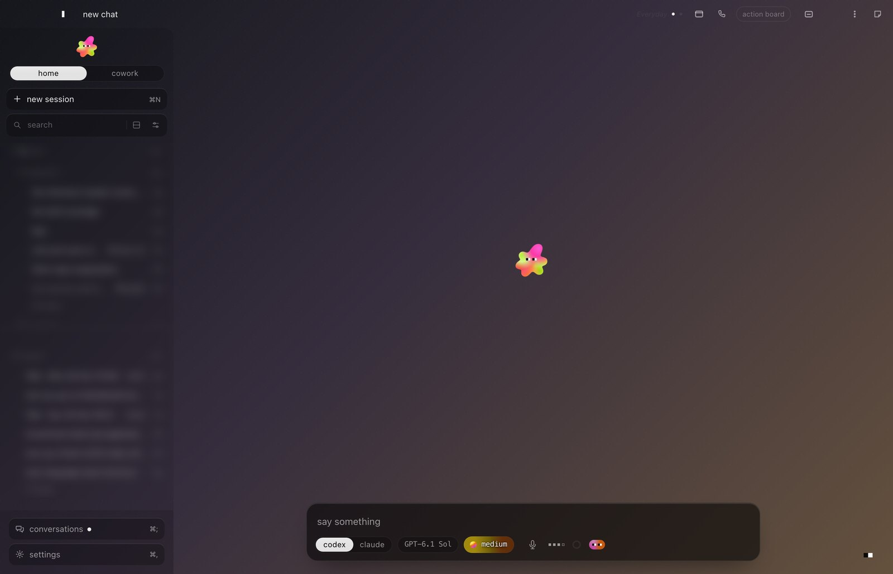

Sol
One window for all your AI.
Claude, ChatGPT's Codex, your browser, notes and your voice, together in one app on your own Mac. You talk; Sol does the clicking.
beta · round one · free
Get Sol
Unzip it, open Sol, and it sets itself up.
The first time, macOS asks you to allow it (below).
curl -fsSL https://sol.matterfold.tech/install | shOpen Terminal (press ⌘ space, type Terminal, press return), paste the line, press return. It asks your name, sets everything up and opens Sol. A few minutes, once. This way skips the macOS step below.
Don't have Claude? Take the download instead: the line asks for Claude's sign-in on the way.
Free while it's in beta. Sol counts how it's used (which buttons, how long answers take), never what you say; the privacy page says exactly what.
Latest build: · what changed
What you need
Apple silicon or Intel, on macOS 14 or newer (we test on macOS 26). Windows and Linux come later.
ChatGPT Plus or Pro, or Claude Pro or Max. Either one works; both is best. You sign in yourself, so the thinking runs on your own plan, and Sol itself is free while it's in beta.
Only if you want to talk out loud with Sol. It's free from Google AI Studio; skip it otherwise.
The first open
macOS asks once. Here's where to click.
Sol isn't signed by Apple yet, so the first time you open the download, your Mac stops it to be careful. You allow it once and it never asks again.
- Open Sol. macOS says "Sol" Not Opened. Click Done.
- Open System Settings, then Privacy & Security. Scroll down and click Open Anyway.
- Click Open Anyway once more and type your Mac's password. Sol opens.
Your things stay yours
Sol runs on your computer. Your chats and your files stay there; what you ask goes straight from your Mac to ChatGPT or Claude, under your own account. During the beta, Sol sends us once a day how it was used (which buttons, how long an answer took, how much of your plan a day cost), never what you type, say or open. Say the word on Discord and it stops. The whole story is on the privacy page.
Questions
No. Sol is free while it's in beta. What you do in it counts toward your own ChatGPT or Claude plan, the same as using them anywhere else.
Yes. Chats run on ChatGPT's Codex unless you switch. The one thing you'd miss is the coding sessions in Work, which run on Claude. When Sol shows its Claude card, press next; Codex signs you in the first time you talk to it.
Apple registers apps for a yearly fee, and we haven't done that yet for the beta. So macOS asks you to allow Sol once, as drawn above. Nothing else is different.
So Sol can hear you when you talk to it, see what you're looking at when you ask, and click for you. Say no to any of them and turn them on later in System Settings.
That's normal. Sol uses Claude's own sign-in, which runs there; Sol never sees your password. Sign in, then come back to Sol.
Mac first. Linux works from the one line, with the window in your browser. Windows and the phone come later.